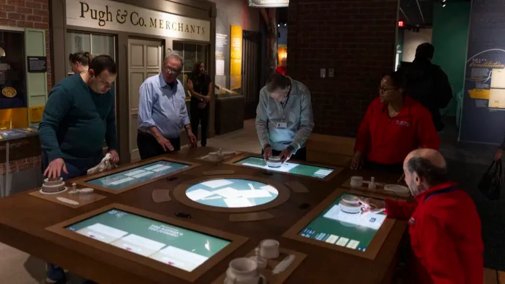
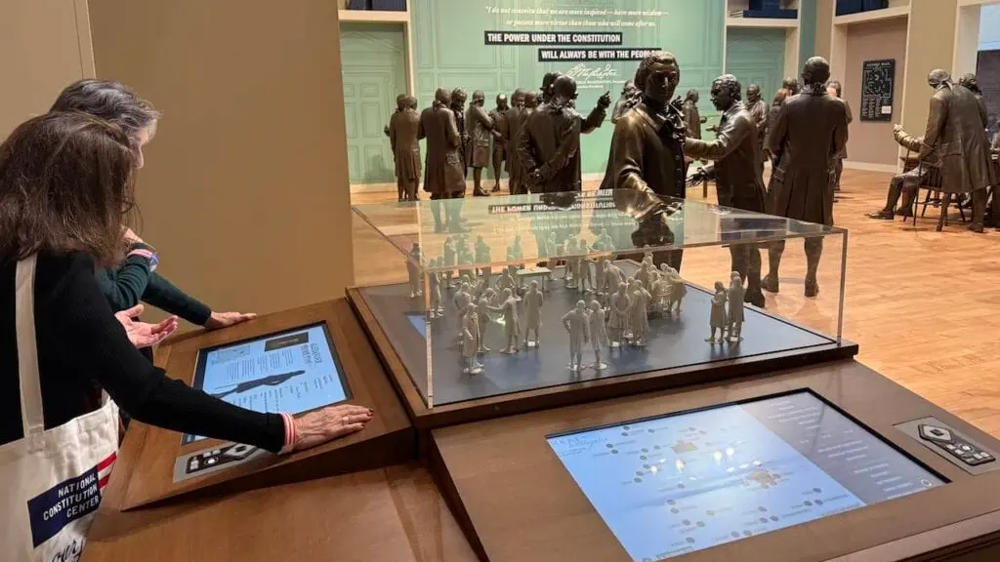

Drag & Drop Website Builder

The America's Founding Gallery at The National Constitution Center is a historical exhibit that I worked on at Trivium Interactive that focuses on the time period leading up to and immediately following the founding of the United States. The gallery is filled with artifacts, immersive video rooms, and multiple interactives that dive into the history of the period. Next door to the America's Founding Gallery is the museum's Signer's Hall, which boasts life size bronze statues of all founding fathers present at the signing of the constitution. My contributions to the galleries include developing one interactive in America's Founding: Debate to Document, and one interactive in Signers' Hall: Meet the Delegates.
Debate to Document is a multi-station interactive that can be used for either individual exploration or docent guided learning. It directs users through different debates that were had at the constitutional convention, the positions that were discussed, then how the results of those discussions ended up in the constitution. If a docent is guiding a group through use of the stations, a special docent mode is triggered that manages the networking of all of the stations together, allowing the docent to assign specific debates to certain stations, and ensuring that all of the groups move forward together.
Meet the Delegates is a multi-station interactive that allows users to dive into the details of everyone present at the constitutional convention. A map of the room allows users to identify all of the statues and explore their personal portfolios. The interactive also sports a custom miniature replica of the room with lights underneath each of the mini statues. The maps on each station screen are accompanied by categories like Revolutionary War Soldier and Enslaver, that would light up all founding fathers in that category, both on the screen and on the miniature replica. In order to manage lighting between both stations, they are networked together to pass information about which lighting states they are in. Each station has its own NavPad instructional device which allow visitors to explore the interactive through a responsive auditory guide. The docents in Signers' Hall have been very happy to have this additional tool to show visitors all the hidden depths the bronze statues contain.
Drag & Drop Website Builder